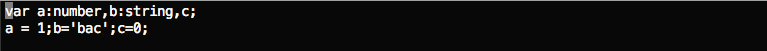
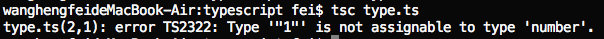
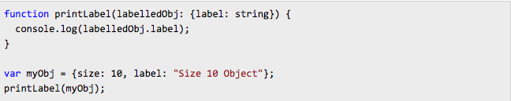
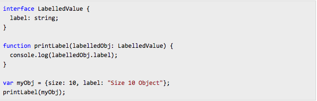
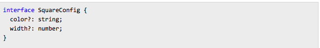

什么是TypeScript
TypeScript，简称ts，是微软开发的一个JavaScript转译语言，且是JavaScript的超集，最终将会编译为JavaScript语言
开发准备
- npm install -g typescript安装转译器
- 安装完成后我们就可以使用 TypeScript 编译器，名称叫 tsc，可将编译结果生成 js 文件，使用如下命令
tsc filename.ts
TS几种重要的特性
- 类型注解
- 接口 interface
- 类 class
- 模块 module
- 编译时检查 properly checked
特性说明和示例
类型注解
ts有以下几种基础类型
- Boolean
- Number
- String
- Array
- Enum
- Any
- Void
ts提供类型注解用于编译时检查，是可选的，注意是编译时检查，也就是说可以理解为是一种开发中的语法检查，对运行时是无作用的  以上定义了三个变量a，b，c。a注解是number类型，b是字符串，c没有规定类型。 此时a，b很好理解，必须是规定的类型，编译时会对赋值类型进行检查，如果赋值为非规定类型，则会抛出以下错误  对于c来说，没有定义类型，所以它可以赋值任何类型的值，tsc编译时，会对其类型进行推断，无法推断的情况下会认为它是空对象类型，{}。
接口，interface
TypeScript的核心原则之一就是类型检查，重点对其所有的值进行检查。及我们常说的“鸭式辩型”或者称之为“子类型结构化”，而接口正是充当了类型定义的这一角色（这里所说的类型是基础类型组成的新的自定义复杂类型），另外它还是编写代码中以及和其他项目一种极其有力的约定，或者称为规范。
 以上示例中，printLabel函数规定参数了labelledObj必须有类型为string的label字段，编译时会对其进行检查，让我们看一下用interface时如何实现的  两种写法来看，用interface明显更加清晰，可靠。 另外正如“鸭式辩型”一样，interface类型检测只会检查所要求的结构，字段是否满足，其他多余并不care，顺序也不会进行检查
另外下面的这种用法，表示不是强制要求，即可以没有，有的话类型必须对 
类，class 和 模块 module
没有什么惊艳之处，es6已经支持class，module的写法，ts增加了一些新的特性，例如照抄java的public,private,protected的类属性的限制，以及抽象类等
写在最后
JavaScript的最大优点是灵活，最大的缺点是太灵活
弱类型，异常处理，动态编译造成JavaScript天生就是一门灵活的语言。好的开发者将JavaScript运用的淋漓尽致，一般的开发者被JavaScript玩弄于鼓掌之中或是停留在表皮。 严格模式，es6的出现以及eslint的使用，都是JavaScript开发者规范其写法，以及规避异常的方式，TypeScript也不例外。类型检查，严谨的约定，清晰的结构化让TypeScript显得更加的像java那样正规，严谨。 interface不同于java用于类去实现，而作为一种自定义的复杂类型让代码结构变得构架清晰，同时利于类型检查和模块接入，让人眼前一亮。 作为一中灵活性极大地语言，TypeScript想要让开发者特放弃这种灵活，在业界普及，几乎不太可能。所以更加期待es7或者是es8能够看到这些变化！